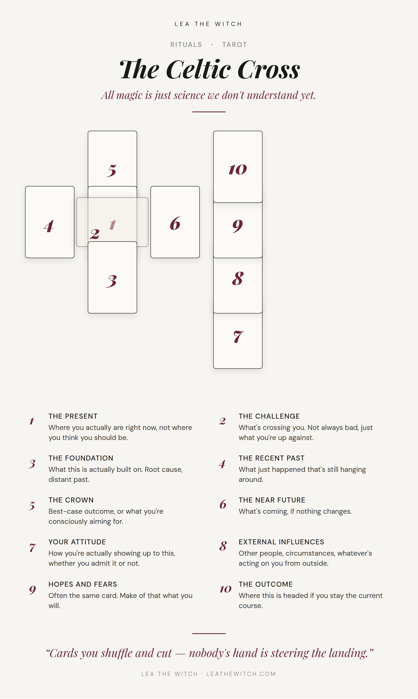

Most days, one card or a quick three-card pull is plenty. You don’t need the full machine to check in with yourself. But when something’s actually tangled, when you can’t tell what’s cause and what’s just noise anymore, the Celtic Cross is the spread that makes you slow down and look at the whole shape of it instead of picking at one corner.
It’s ten cards instead of one, and the first couple of times you lay it out it looks like a lot. It isn’t. It’s one story, told from ten angles at once, and once you’ve done it a handful of times your hands just know where each card goes.
Lay it out
The layout looks more complicated on paper than it is. Four cards build a small cross in the middle of the table, a fifth lies sideways across the second one, and four more run up a column beside it. That’s the whole thing. The middle six cards are doing almost all of the work, the column to the side is context, not the headline.

What the ten positions are actually asking
The center six are the situation itself. Card one is where you actually are, not where you think you should be, and card two lies across it as whatever’s crossing you, which isn’t automatically a bad card, just the thing you’re up against either way. Card three, underneath, is the foundation this is actually built on, further back than you’d normally think to look. Card four is the recent past still hanging around, and card five above is the best-case outcome, or whatever you’re consciously aiming for. Card six, to the right, is the near future if nothing about your approach changes.
The column of four running up the side is everything acting on the situation from outside it. Card seven is your actual attitude, how you’re really showing up to this whether you’d admit it out loud or not. Card eight is other people and circumstances, whatever’s pushing on you that isn’t coming from inside the situation. Card nine is hopes and fears, and I mean that literally, it’s often the same card doing both jobs at once, which tells you something on its own. Card ten is the outcome: where this actually goes if you stay on the course you’re on right now.
All magic is just science we don’t understand yet.
Read it as one story, not ten fortunes
The mistake most people make with this spread is treating each position like its own separate fortune cookie, present card says one thing, outcome card says something completely different, and they just report both and move on. Don’t do that. The whole point of laying out ten cards instead of one is that they’re supposed to argue with each other a bit.
Start by checking whether the foundation actually explains the present. If card three and card one don’t seem related at all, that’s usually a sign you’re not looking far back enough, not that the cards are wrong. Then look at the gap between the crown and the outcome, card five and card ten. That gap is the most useful part of the whole spread. If they match, you’re already on track. If they don’t, the distance between what you’re consciously aiming for and where you’re actually headed is the real reading, more than either card on its own.
Card seven, your attitude, is the only position in the whole spread you actually have direct leverage over. Everything else is describing forces already in motion. That one’s the lever. And don’t skip past card nine just because hopes and fears sounds like a throwaway position, when it’s the same card twice, sit with that instead of reading past it.
I’ve already gone deep on why I think any of this works at all in The Physics Case for Tarot — cards you shuffle and cut, nobody’s hand steering the landing, the whole string-theory rabbit hole. None of that changes with ten cards instead of one. It’s the same random matrix, just pulling more of the string at once.
← Back to Rituals